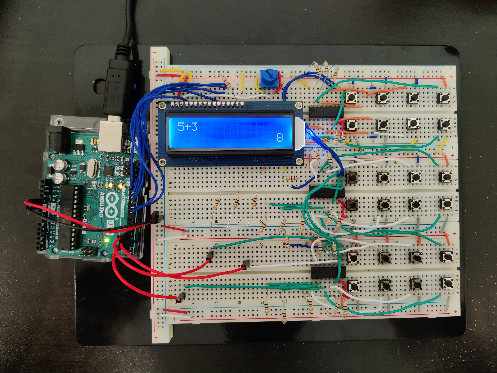

Arduino Calculator
Background
For my first semester at Georgia Tech in Fall 2020, I was actually an electrical engineering major. In that first semester, I took a class called ECE Discovery Studio (ECE 1871, now ECE 1100), in which the final project was to do a self-guided "discovery project" of some kind.
I chose to make a four-function calculator for my discovery project, using the Arduino microcontroller. This project actually went for much longer than the end of that class; I continued during the Winter 2020 semester break, and finished in Summer 2021.
Hardware Design
The hardware has a pretty straightforward structure of input (the buttons for the calculator), processor (Arduino), and output (the LCD display).

A normal four-function calculator has 24 buttons, which would require 24 input/output slots. However, the Arduino UNO microcontroller I used only had 14 input/output slots.
And thus, in between the buttons and the Arduino are three parallel-to-serial shift registers that can condense the 24 button inputs to take up only 3 slots on the Arduino. This is done by sending all 24 input values sequentially through one output, with the other two slots used for clock and latch signals.
Using the shift registers also has the advantage of freeing up slots for the LCD display. I used a display compatible with the Hitachi HD44780 driver, which allowed me to use the Arduino LiquidCrystal library, simplifying programming.
Software
The software on the calculator interprets the inputs, performs calculations if necessary, and outputs values to the LCD display.
Early on in development, I found that the numerical data types in Arduino were too inaccurate to use for the calculator, and so I created my own library for entering and performing calculations on numbers. This library would hold numbers as arrays of place values, and so I had to program in operations like addition, subtraction, multiplication, division, and taking square roots myself.